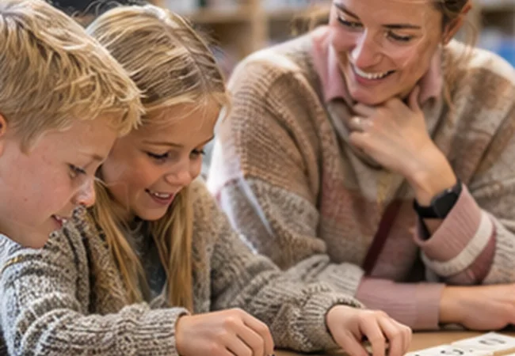

Tidlig opmærksomhed gør det lettere at sætte ind, før eleven oplever mange nederlag. Tegn skal vurderes i sammenhæng og over tid.

Tidlig opmærksomhed gør det lettere at sætte ind, før eleven oplever mange nederlag. Tegn skal vurderes i sammenhæng og over tid.
01 · Hvad ved vi?
Tegn skal ses i sammenhæng og over tid
I børnehaveklasse kan udfordringer med rim, lydopmærksomhed og bogstavkendskab være relevante observationer. I indskolingen er usikker bogstav-lyd-kobling, langsom eller upræcis afkodning og stavning centrale. På mellemtrin og i udskoling kan langsomhed, stor udtrætning og undgåelse blive mere synligt. Et enkelt tegn er ikke en sikker indikator.
Fra guide til arbejde
Følg elevens læsning over tid
Brug observationsskemaet sammen med Lydsporet, og notér både opgavens krav og elevens strategier.
Brug samme korte observationer over flere uger. Se efter mønstre i elevens læsning, stavning, forståelse og motivation. Dokumentér læringsbetingelserne: teksttype, støtte, tid og opgavens krav. Samarbejd med læsevejleder om afklaring.
03 · Hvad gør vi?
Beskriv læseudviklingen præcist
Observer 5 til 10 minutters autentisk læsning. Notér hvilke ord eleven stopper ved, hvordan eleven kommer videre, og om en oplæsning ændrer forståelsen. Tal med eleven uden at udstille resultatet.
Casebaseret læring
Når Emma gætter på ordene
I 2. klasse gætter Emma på ord ud fra første bogstav og illustration. Hun siger ofte et ord, der giver mening i historien, men ikke passer til bogstavfølgen. Det kalder på nærmere undersøgelse af afkodningsstrategier.
Din refleksion
Hvilke tre observationer ville hjælpe dig med at beskrive Emmas læsning uden at stille en diagnose?
Dine svar bliver på din enhed, indtil du selv vælger at gemme eller kopiere dem.
Læs videre i de angivne fagkilder og kontrollér, hvordan de passer til din undervisningskontekst. Cases og undervisningseksempler er udarbejdet til Læseblik. Sidst gennemgået: 31. oktober 2026.
Arbejder du videre med emnet?
Følg den samme korte læseaktivitet over flere gange, og hold observationerne adskilt fra dine hypoteser.